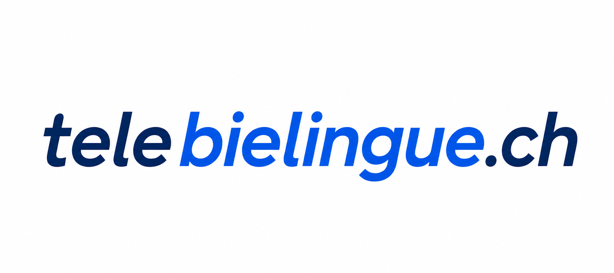

Prototype de site web pour une télévision locale
Ce projet présente un prototype fonctionnel de site web développé pour une télévision locale.
L’objectif était d’explorer une refonte moderne du site web, avec une interface orientée contenu, vidéo et diffusion en direct
Le prototype inclut une interface publique ainsi qu’un système d’administration permettant la gestion des émissions, contenus promotionnels, partenaires et éléments visuels comme des slides.
Technologies utilisées
Fonctionnalités clés
Gestion du contenu
Création et modification des émissions, slides et contenus promotionnels via une interface d’administration.
Diffusion vidéo
Intégration de flux vidéo en direct et de contenus YouTube.
Architecture légère
Stockage JSON sans base de données pour un prototypage rapide.
Responsive design
Interface adaptée sur ordinateur, tablette et mobile.
Intégrations externes
Intégration de services externes comme YouTube et Google Maps.
Interface responsive
Utilisation adaptée sur ordinateur, tablette et mobile.
Approche de développement
Ce projet a été développé avec l’appui d’outils d’intelligence artificielle utilisés comme assistance au développement. Le besoin fonctionnel, les choix d’orientation et les validations ont été définis et pilotés par mes soins tout au long du projet.
Les données sont stockées dans des fichiers JSON afin de garder une architecture légère et adaptée à une phase de prototype. Cette structure pourrait évoluer vers une base SQLite si le projet devait être utilisé de manière plus complète.
Captures d'écran
Quelques écrans représentatifs du site et de ses principales fonctionnalités.
{kind=link}
{kind=link}
{kind=link}
{kind=link}
Les images présentées ci-dessus appartiennent à TeleBielingue et sont utilisées ici dans le cadre d'un prototype.
Vidéo de démonstration
Une démonstration vidéo sera ajoutée prochainement.